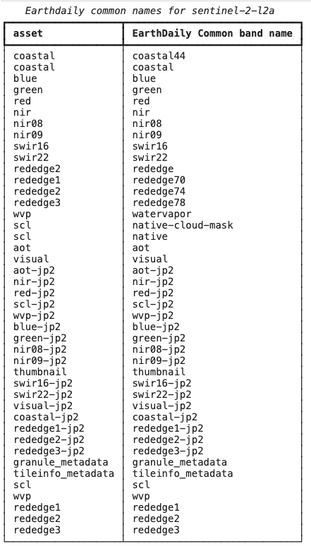

Quick Start🔗
Table of contents🔗
EarthDaily Data🔗
EarthDaily data comprises of Open collections, EDA specific collections, Mosaics and Cloudmasks. There are different ways to access this data and they are outlined below. Please note that for all of the below options, you will need to have authentication details available. You can find the details about all the available Collections, Mosaics and CloudMasks.
- API
- PySTAC library
- EarthDaily Python Client
Authentication🔗
There are different ways outlined below for accessing the EarthDaily data. The required client_id, client_secret and access_token_url values can be found on Account Management page. These API credentials are specific to your user account on EarthPlatform and should be kept confidential.

For more see: Authentication
API🔗
EarthDaily provides STAC compliant restful APIs with various endpoints for you to access the data. You can also search the data with specific filters on fields and customize the output to include the data you are interested in.
- API list gives you the detailed list of available endpoints
- Postman Examples are available to see the example query and the response using Postman
- Curl Examples are available in case you are interested to play around with our APIs using command line
PySTAC🔗
PySTAC is a library for working with SpatioTemporal Asset Catalogs (STAC). Please find all the features and capabilities of PySTAC along with the details of all the set up required.
Here is a small snippet to give you an idea
import os
import requests
from dotenv import load_dotenv
from pystac.client import Client
load_dotenv() # take environment variables from .env
CLIENT_ID = os.getenv("EDS_CLIENT_ID")
CLIENT_SECRET = os.getenv("EDS_SECRET")
EDS_AUTH_URL = os.getenv("EDS_AUTH_URL")
API_URL = os.getenv("EDS_API_URL")
STAC_API_URL = f"{API_URL}/platform/v1/stac"
session = requests.Session()
session.auth = (CLIENT_ID, CLIENT_SECRET)
def get_new_token(session):
"""Obtain a new authentication token using client credentials."""
token_req_payload = {"grant_type": "client_credentials"}
try:
token_response = session.post(EDS_AUTH_URL, data=token_req_payload)
token_response.raise_for_status()
tokens = token_response.json()
return tokens["access_token"]
except requests.exceptions.RequestException as e:
print(f"Failed to obtain token: {e}")
token = get_new_token(session)
# Configure pystac client
client = Client.open(STAC_API_URL, headers={"Authorization": f"bearer {token}"})
# Get collections
for collection in client.get_all_collections():
print(collection)
You can find the detailed examples using Python script
EarthDaily Python Client🔗
The fastest way to get up and running is to use EDA's Python Client Repository.
Build a new Virtual Environment:
# Create a virtual environment
python -m venv .venv
source .venv/bin/activate # On Windows: .venv\Scripts\activate
# Install the EarthDaily Python client
pip install earthdaily
Create a .env file in your project directory with your API credentials:
EDS_AUTH_URL=https://api.earthdaily.com/account_management/v1/authentication/api_tokens/exchange
EDS_CLIENT_ID=EARTHDAILY_API_TOKEN
EDS_SECRET=<API_TOKEN>
EDS_API_URL=https://api.earthdaily.com
Important: Replace <API_TOKEN> with your actual API secret from the Account Management page.
Test the Available Collections:
from earthdaily.legacy.earthdatastore.cube_utils import asset_mapper
from rich.table import Table
from rich.console import Console
console = Console(force_interactive=True)
for collection, assets in asset_mapper._asset_mapper_config.items():
table = Table(
"asset",
"EarthDaily Common band name",
title=f"Earthdaily common names for {collection}",
)
for common_name, asset in assets[0].items():
table.add_row(asset, common_name)
console.print(table)
This will output a list of assets for all available collections to you in the platform.

Other Examples🔗
Examples🔗
Find comprehensive example scripts in the examples directory of the EarthDaily Python Client repository:
Legacy Examples🔗
The following examples are still available but are now located in the legacy examples directory: